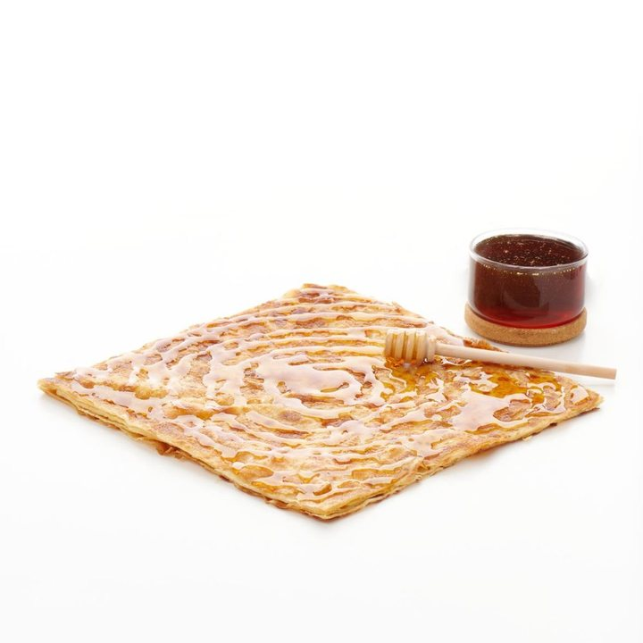
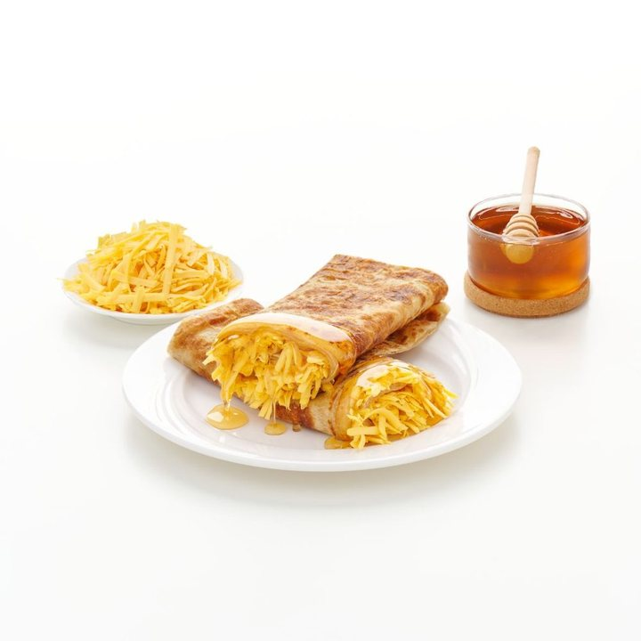
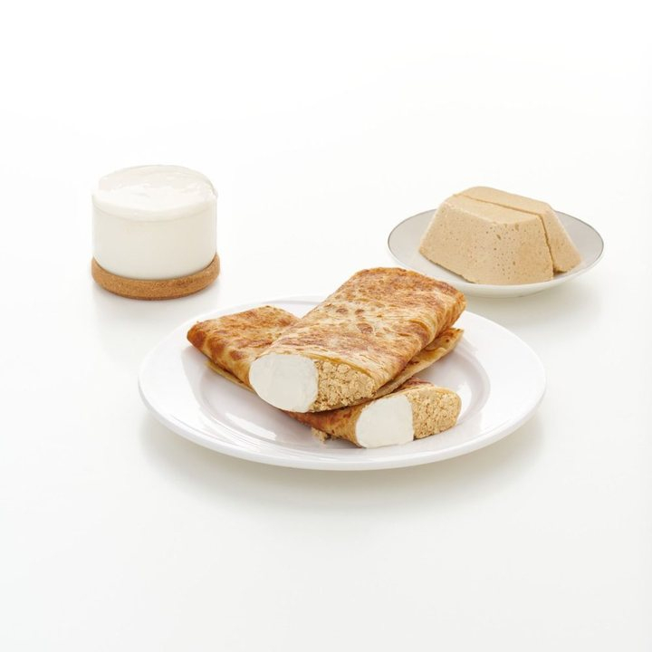
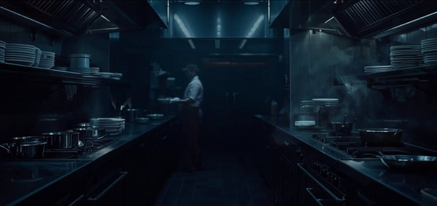

والتطبيق قادم قريباً
مطاعمك… أقرب لك
السعر الذي تراه هو الذي تدفعه.
نبدأ من حيٍّ واحد في المدينة المنورة، ونتوسّع حيّاً حيّاً.
ادخل من بابك
زادقو منصّةٌ لثلاثة: من يطلب، ومن يطبخ، ومن يوصّل — اختر بابك.
من مطبخ أوّل شركائنا
هذه صورٌ حقيقية من مطعمٍ شريكٍ فعليّ — لا صور مخزون. ما تراه هو ما يصلك.



لماذا صورٌ من مطعمٍ واحد؟ لأننا ما زلنا في التجربة، ولا نملك تسعة مطابخ نصوّرها. وصورةٌ من مخزونٍ عالميّ تحت عنوان «من مطابخ مدينتك» كذبةٌ يكشفها القارئ في ثانية.
نعمل حين تعمل المدينة
أعلى ساعات المطبخ في المدينة ليست الظهر. هي ما بعد المغرب، وما بعد العشاء، وساعات السحور الطويلة. من يوصّل في تلك الساعات يكسب أكثر، ومن يطبخ فيها يبيع أكثر — ونحن مبنيّون لها.
الطلبات تتجمّع قبل الأذان بنصف ساعة — والمطبخ الجاهز يكسبها.
أطول موجةٍ في اليوم، وأكثر ساعةٍ يحتاج فيها المطعم كابتناً قريباً.
ساعات السحور: قليلٌ من المنافسين، وطلبٌ لا ينقطع.
إلى أين يذهب ريالك
فاتورتك ثلاثة بنودٍ وإجمال — ولا بند رابع يظهر عند الدفع.
ما تدفعه أنت
| الوجبات | —— |
| التوصيل | —— |
| خصم الكوبون | —— |
| الإجمالي | —— |
وأين يذهب
| إلى المطعم | —— |
| إلى الكابتن | —— |
| إلى زادقو | —— |
- الأسعار شاملة ضريبة القيمة المضافة — لا سطر يُضاف عند الدفع.
- الخصم تموّله زادقو وحدها؛ لا يُخصم من المطعم ولا من الكابتن.
- ولو أُلغي طلبك، يعود إليك ما دفعته.
لأصحاب المطاعم — كن شريكاً

عملاء جدد يصلونك من اليوم الأول — بلا أي تكلفة تأسيس. قائمة طعامك الرقمية بصورك وأسعارك، وطلباتك تصل مطبخك لحظة وقوعها، وتقارير تُطلعك على كل ريال.
- قائمة طعامك الرقمية بصورك وأسعارك
- طلباتك تصل مطبخك لحظة وقوعها
- مستحقاتك بحساب مكشوف أمامك سطراً سطراً
- أي جوال أندرويد عندك يصير شاشة طلباتك
للكباتن — دخلٌ مرن بشروط عادلة
أرباح واضحة
نصيبك من كل توصيلة معروفٌ قبل أن تقبلها — ومحفظةٌ ترصد كل ريال.
حرية الوقت
اتصل متى شئت، واستلم الطلبات القريبة منك.
إنصاف التقييم
نظام تقييمٍ شفّاف يحمي المجتهد.
احسب صافيك بأرقامك أنت
هذا حسابٌ من أرقامك أنت. زادقو لا تَعِد بأي مبلغ، ولا يوجد رقمٌ مبرمَج في هذه الحاسبة.
وبوّابتك بلغتك: